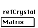

Distributed By: Virtual Labs
Primitive Cell Volume Calculation - Numerical:
PATH...{SAD}:Exp. Info::Numerical Primitive Cell Calc.
PATH...{CBED}:Exp. Info::Numerical Primitive Cell Calc.
PATH...{Laue}:Exp. Info::Numerical Primitive Cell Calc.
Use the PCV Numerical (Primitive Cell Volume) calculation dialog box to
calculate experimental periodicities and reduced cell volumes. It is found
under the Exp. Info Menu by selecting the Numerical Primitive Cell Calc
PCV Numerical Dialog Box
Use the PCV Numerical (Primitive Cell Volume) calculation dialog box to
calculate experimental periodicities and reduced cell volumes. It is found
under the Exp. Info Menu by selecting the Numerical Primitive Cell Calc.
The methodology for identifying a crystal based on experimental diffraction
information is a major part of any general material science experiment with
the electron microscope.
Because of its importance, a number of schemes have been developed over
the years to aid this process. One method is the combined d-space information
and chemistry which was developed by M. Carr and co-workers during the compilation
of the Electron Diffraction Database. This uses a set of d-space values
with a fairly wide error range and the chemistry to very quickly narrow
down the potential crystals. An additional method, described by numerous
authors , , is the determination of the reduced cell volume for the experimental
crystal. The reduced cell volume, combined with the chemistry of the unknown
is an extremely powerful method which often can eliminate all but a single
candidate. Desktop Microscopist supports the methodology described by LePage
and Downham . The advantage of this technique is the ability to determine
the reduced cell volume from a single micrograph. It has a number of potential
pitfalls in its use. If this technique is unfamiliar, a review of the relevant
articles is encouraged.
In this technique, a diffraction pattern with both the zero order Laue zone
and one or more higher order zones is obtained. Measure two non parallel
vectors from the zero order zone and the radii of as many higher order zones
as possible. Input these parameters into Desktop Microscopist and a reduced
cell volume with periodicities can be calculated.
The following is a breakdown of each feature for this dialog box: .i.PCV
Numerical Dialog:Set D-spacings;
These editable text boxes are used to enter the two
non co-linear plane d-spacings from the zero order zone. These d-spacings
may be entered either in Å or in mm.
Clicking on this button will cause it to toggle between
Å or mm. The label on this button expresses the units for the experimental
d-spacings being entered. The mm selection should be used when entering
experimental g-vectors as measured from a micrograph..i.PCV Numerical Dialog:D-spacing
Units;
This editable textbox which is found to the right of
the d-spacing values is used to specify the camera constant for converting
the experimental g-vector values to d-spacings..i.PCV Numerical Dialog:Camera
Constant;
 This button is another toggling function. It changes
from Camera Constant to Camera Length. This allows the alternative usage
of a camera length for determining conversions.
This button is another toggling function. It changes
from Camera Constant to Camera Length. This allows the alternative usage
of a camera length for determining conversions.
This editable textbox is where the angle between the
two zero order g-vectors is entered. The g-vectors must not be co-linear
and as a result this angle may not be zero..i.PCV Numerical Dialog:Angle
between;;
This text box specifies the accelerating voltage to
be used for the calculations. This value is used for converting the camera
length to a camera constant and for the conversion of the radii to periodicities..i.PCV
Numerical Dialog:Accelerating Voltage;
 This second camera constant set of values is for the
experimentally determined radii of the higher order zones. Often, it is
necessary to measure the low order g-vectors lengths at a much higher magnification
than the radii of the higher order zones.
This second camera constant set of values is for the
experimentally determined radii of the higher order zones. Often, it is
necessary to measure the low order g-vectors lengths at a much higher magnification
than the radii of the higher order zones.
When opening this dialog box, Desktop Microscopist defaults the camera constant
and accelerating voltage to the currently defined window values.
This editable text box and its associated check box
check are used to enter the expected zone order (Order - must be positive
integer values) and the Diameter of the higher order Laue zones.
Clicking on this button or pressing return will initiate
the calculation. Desktop Microscopist will then place the calculated Periodicity
(Period Å) and the reduced cell volume (Vol. Å3) in the appropriate
cell.
XII. Finally, Desktop Microscopist provides a means for comparing the calculated
values to the stored crystal values. Select the crystal
for comparison from this menu, enter the expected Zone Axis, and the desired
Order for the calculation and Desktop Microscopist will return the calculated
Periodicity, and the diameter in millimeters, based on the accelerating
voltage and the second entered camera constant..i.PCV Numerical Dialog:Reference
Crystal;
Author: J.ames T.
Stanley
 Desktop
Manual:Dialog Boxes
Desktop
Manual:Dialog Boxes
Distributed By: Virtual Labs
Last Updated:1/12/96 Sat, Apr 27, 1996